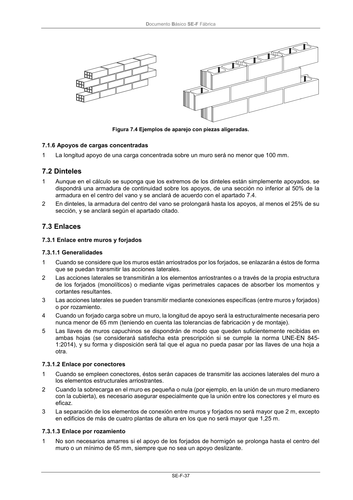

DB-SE-F Fábrica · edición 2019-12-20 · capa oficial
Documento DB-SE-F-oficial · SHA-256 del PDF e3e0805c3b4c307519c26dc34c3fdbf143d842edd013c91b0f52d2c73403d91c
Página física 41 de 70.
Copia fiel del PDF fuente · Fuente oficial
Ficha de la disposición en la fuente oficial
Formato: Texto de la página (Markdown)
Documento Básico SE-F Fábrica SE-F-37 Figura 7.4 Ejemplos de aparejo con piezas aligeradas. 7.1.6 Apoyos de cargas concentradas 1 La longitud apoyo de una carga concentrada sobre un muro será no menor que 100 mm. 7.2 Dinteles 1 Aunque en el cálculo se suponga que los extremos de los dinteles están simplemente apoyados. se dispondrá una armadura de continuidad sobre los apoyos, de una sección no inferior al 50% de la armadura en el centro del vano y se anclará de acuerdo con el apartado 7.4. 2 En dinteles, la armadura del centro del vano se prolongará hasta los apoyos, al menos el 25% de su sección, y se anclará según el apartado citado. 7.3 Enlaces 7.3.1 Enlace entre muros y forjados 7.3.1.1 Generalidades 1 Cuando se considere que los muros están arriostrados por los forjados, se enlazarán a éstos de forma que se puedan transmitir las acciones laterales. 2 Las acciones laterales se transmitirán a los elementos arriostrantes o a través de la propia estructura de los forjados (monolíticos) o mediante vigas perimetrales capaces de absorber los momentos y cortantes resultantes. 3 Las acciones laterales se pueden transmitir mediante conexiones específicas (entre muros y forjados) o por rozamiento. 4 Cuando un forjado carga sobre un muro, la longitud de apoyo será la estructuralmente necesaria pero nunca menor de 65 mm (teniendo en cuenta las tolerancias de fabricación y de montaje). 5 Las llaves de muros capuchinos se dispondrán de modo que queden suficientemente recibidas en ambas hojas (se considerará satisfecha esta prescripción si se cumple la norma UNE-EN 845- 1:2014), y su forma y disposición será tal que el agua no pueda pasar por las llaves de una hoja a otra. 7.3.1.2 Enlace por conectores 1 Cuando se empleen conectores, éstos serán capaces de transmitir las acciones laterales del muro a los elementos estructurales arriostrantes. 2 Cuando la sobrecarga en el muro es pequeña o nula (por ejemplo, en la unión de un muro medianero con la cubierta), es necesario asegurar especialmente que la unión entre los conectores y el muro es eficaz. 3 La separación de los elementos de conexión entre muros y forjados no será mayor que 2 m, excepto en edificios de más de cuatro plantas de altura en los que no será mayor que 1,25 m. 7.3.1.3 Enlace por rozamiento 1 No son necesarios amarres si el apoyo de los forjados de hormigón se prolonga hasta el centro del muro o un mínimo de 65 mm, siempre que no sea un apoyo deslizante.
